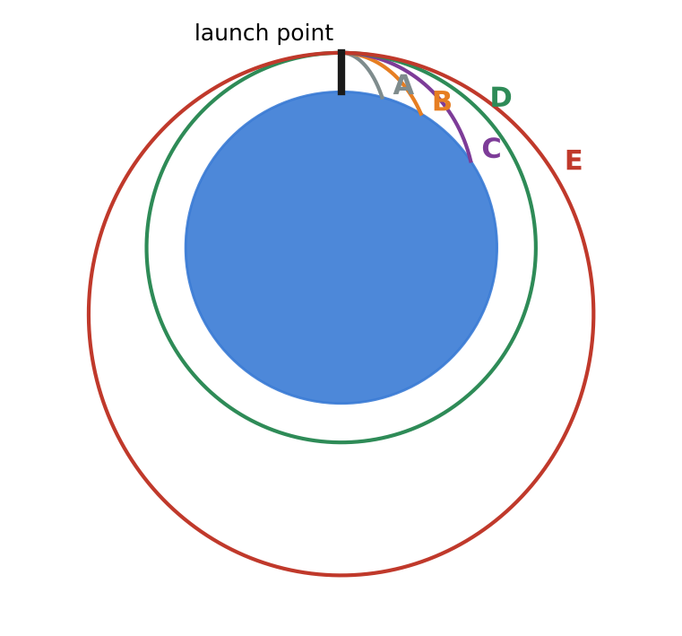
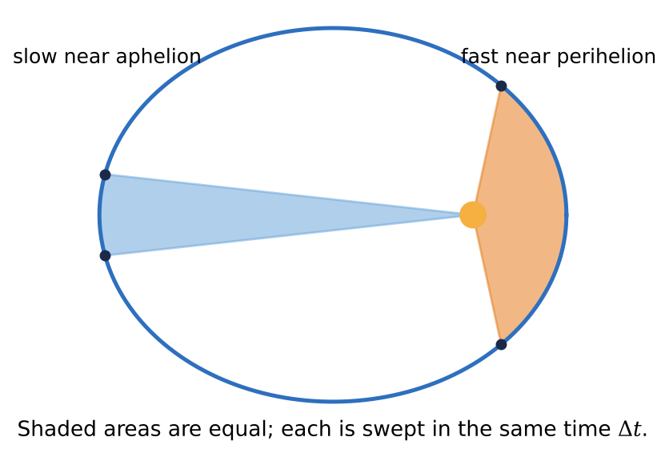
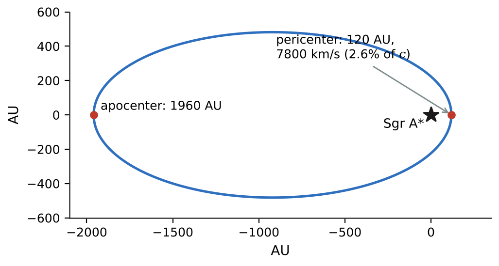

🪐What you will learn
By the end of this module, you can:
- Use Newton's law of gravitation and superposition to find gravitational forces between astronomical bodies.
- Compute surface gravity, escape speed and gravitational potential energy for any spherical world.
- Find the speed, period and energy of a satellite in a circular orbit.
- Apply Kepler's three laws, including Newton's form of the third law, to weigh planets, stars and black holes.
- Use the shell theorem, account for a planet's rotation, and compute a Schwarzschild radius.
13.1Newton's Law of Gravitation
Newton's great insight was that the force that pulls an apple down is the same force that holds the Moon in orbit. The Moon is falling too; it just moves sideways fast enough to keep missing the Earth. Every particle attracts every other particle with a force along the line joining them, of magnitude
\[ F_g = \frac{G m_1 m_2}{r^2}, \qquad G = 6.674\times10^{-11}\ \text{N}\cdot\text{m}^2/\text{kg}^2 \]Gravity is always attractive, follows an inverse square law (double \(r\), quarter the force), and the two forces form a Newton's-third-law pair: the Earth pulls the Moon exactly as hard as the Moon pulls the Earth. Spherical bodies act as if all their mass were at their center, so \(r\) is measured center to center.
Gravity is by far the weakest fundamental force (two 1 kg masses 1 m apart attract with only \(6.7\times10^{-11}\) N), but it dominates astronomy because mass has only one sign, so the pulls of all atoms add up, and its range is unlimited.
When several bodies act, add the forces as vectors (superposition). Surprisingly, the Sun pulls on the Moon about twice as hard as the Earth does; the Moon stays with us because the Sun accelerates the Earth and Moon almost equally. Cavendish first measured \(G\) in 1798 with a torsion balance, thereby "weighing the Earth."
13.2Weight
The weight of a body is the total gravitational force on it; near a planet, the planet's pull dominates. Setting \(GMm/R^2 = mg\) gives the surface gravity
\[ g = \frac{GM}{R^2} \]The mass of the falling body cancels, which is why a hammer and a feather fall together on the Moon. Reversed, \(M = gR^2/G\) "weighs" the Earth: \(5.96\times10^{24}\) kg, implying a mean density of about 5500 kg/m\(^3\) and hence a dense iron core.
Above the surface, \(g(r) = g_0 (R/r)^2\). At the ISS (420 km up) \(g\) is still 88% of its surface value: astronauts float because they and the station are falling together, not because gravity has vanished.
Surface gravity depends on both mass and radius. Saturn is 95 Earth masses but its cloud-top gravity is only 14% greater than Earth's; Mercury and Mars have almost the same \(g\). Writing \(M = \tfrac43\pi R^3\rho\) gives \(g = \tfrac43\pi G\rho R\): for similar composition, bigger worlds have stronger gravity. A 1 km asteroid has \(g\) of only \(10^{-3}\) to \(10^{-4}\ \text{m/s}^2\).
Remember: a body's mass is the same everywhere; only its weight changes.
13.3Gravitational Potential Energy
\(U = mgy\) assumes constant \(g\), which fails for a rocket going to the Moon. Integrating the work done by \(F_r = -GMm/r^2\) gives the general gravitational potential energy
\[ U = -\frac{GMm}{r} \]with \(U = 0\) at infinite separation. \(U\) is negative at every finite distance: you must add energy to pull two bodies apart. Near the surface it reduces to \(\Delta U \approx mgy\).
Because \(U\) approaches a finite limit, a body launched fast enough never returns. Setting \(\tfrac12 mv^2 - GMm/R = 0\) gives the escape speed
\[ v_{esc} = \sqrt{\frac{2GM}{R}} \]11.2 km/s for the Earth, 2.38 km/s for the Moon, independent of the projectile's mass and launch direction. The total energy \(E = K + U\) classifies motion: \(E < 0\) is bound, \(E \ge 0\) is unbound.
Escape speed shapes atmospheres. Worlds whose escape speed is not much larger than molecular thermal speeds lose their air: the Moon and Mercury have essentially none, Mars keeps a thin CO\(_2\) layer, and Jupiter (60 km/s) has kept even its hydrogen. For large changes in height, always use energy conservation with \(U = -GMm/r\); a constant-\(g\) estimate can be badly wrong.
13.4The Motion of Satellites
Newton imagined firing a cannon horizontally from a mountain, faster each time. At one special speed the ball falls exactly as fast as the Earth's surface curves away: it is in orbit. A satellite is a projectile in permanent free fall.
For a circular orbit, gravity supplies the centripetal force, \(GMm/r^2 = mv^2/r\), so
\[ v = \sqrt{\frac{GM}{r}}, \qquad T = \frac{2\pi r^{3/2}}{\sqrt{GM}} \]The satellite's mass cancels; larger orbits are slower. The ISS moves at 7.66 km/s with a 92.8 min period. Note that \(v_{esc} = \sqrt{2}\,v_{circ}\) at the same radius.
A geostationary satellite orbits above the equator with a period of one sidereal day (86 164 s), so it hovers over one spot: its radius is 42 200 km (altitude 35 800 km).
Energy. In a circular orbit \(K = GMm/2r\), \(U = -GMm/r\) and
\[ E = -\frac{GMm}{2r} = -K \]This leads to a famous paradox: atmospheric drag removes energy, \(E\) becomes more negative, the orbit shrinks, and the satellite speeds up. Also, most of the energy needed to reach low orbit goes into kinetic energy, not height: getting to space is easy, going sideways at 7.7 km/s is hard.

13.5Kepler's Laws and the Motion of Planets
Using Tycho Brahe's observations of Mars, Kepler found three empirical laws; Newton showed that they all follow from gravitation.
- Ellipses. Each planet moves on an ellipse with the Sun at one focus. With semi-major axis \(a\) and eccentricity \(e\): \(r_{peri} = a(1-e)\), \(r_{aph} = a(1+e)\). Bound orbits are ellipses; unbound ones (like 'Oumuamua's) are hyperbolas.
- Equal areas. The Sun-planet line sweeps equal areas in equal times, \(dA/dt = L/2m\). This is conservation of angular momentum for a central force, so \(r_{peri}v_{peri} = r_{aph}v_{aph}\): planets move fastest at perihelion.
- Periods. Newton's form: \(T = 2\pi a^{3/2}/\sqrt{G(M+m)}\). In years, AU and solar masses, \(T^2 = a^3/(M+m)\).
The third law weighs the universe: measure \(a\) and \(T\) of anything in orbit and you get the central mass, \(M = 4\pi^2a^3/(GT^2)\). Moons give planet masses, binary stars give stellar masses, and star orbits reveal black holes and dark matter. Run in reverse, it gives the orbit size of exoplanets found from a star's radial-velocity wobble, such as 51 Pegasi b.
For an ellipse \(E = -GMm/2a\), and the speed anywhere follows from the vis viva equation, \(v^2 = GM(2/r - 1/a)\).

13.6Spherical Mass Distributions
Why may we treat planets as points? Because of the shell theorem, for a uniform thin spherical shell of mass \(M\):
- Outside the shell, it attracts a mass \(m\) as if all its mass were at the center.
- Inside the shell, its net force is exactly zero: the near small patch and the far large patch pull equally hard in opposite directions, a special property of the inverse square law.
A sphere with \(\rho\) depending only on \(r\) is a set of nested shells. Outside it acts as a point mass. At radius \(r\) inside, only the enclosed mass \(M(r)\) counts:
\[ g(r) = \frac{GM(r)}{r^2} \]For a uniform sphere, \(M(r) = Mr^3/R^3\), so \(g(r) = GMr/R^3\): gravity grows linearly from zero at the center to \(GM/R^2\) at the surface. Real planets are denser at the center; in the Earth, \(g\) actually rises slightly as you descend through the mantle toward the dense iron core.
Inside a uniform planet the force \(F = -(GMm/R^3)r\) is a Hooke's-law force, so a capsule in a tunnel through the center oscillates harmonically with the same period as a grazing satellite (about 84 min for the Earth). On galactic scales, measuring \(M(r)\) from rotation curves reveals dark matter.
13.7Apparent Weight and the Earth's Rotation
A scale measures the normal force, your apparent weight. Because the Earth rotates, a person on the equator moves in a circle and needs a centripetal acceleration \(\omega^2 R\). Part of gravity is "used up" for that, so
\[ g = g_0 - \omega^2 R \quad\text{(equator)}, \qquad \omega = \frac{2\pi}{86\,164\ \text{s}} \]For the Earth, \(\omega^2R_E = 0.0339\ \text{m/s}^2\), only 0.35% of \(g_0\); at the poles there is no correction. At latitude \(\lambda\) the circle has radius \(R\cos\lambda\), and the effective \(\vec{g}\) is slightly tilted from the true radial direction. Over geological time the Earth has bulged at the equator (21 km), and measured \(g\) ranges from 9.780 to 9.832 m/s\(^2\).
Fast rotators. Saturn (10.7 h day) loses about 15% of its equatorial gravity and is visibly flattened. A "rubble-pile" asteroid flings off loose material if \(\omega^2R > GM/R^2\). This gives a minimum period \(T_{min} = \sqrt{3\pi/(G\rho)}\), about 2.3 h for \(\rho = 2000\ \text{kg/m}^3\), matching the observed spin barrier near 2.2 h.
Rotation also helps rockets: launching eastward from the equator gives a free 465 m/s.
13.8Black Holes
In 1783 John Michell asked what happens if a star's escape speed exceeds the speed of light. Setting \(v_{esc} = c\) gives the Schwarzschild radius
\[ R_S = \frac{2GM}{c^2} \]The Newtonian argument is not how general relativity describes it, but it gives exactly the right size. The sphere of radius \(R_S\) is the event horizon, a boundary of no return. For the Sun \(R_S = 2.95\) km (about 3 km per solar mass); for the Earth, 8.87 mm. Only collapsing stellar cores reach such compactness.
Far from a black hole its gravity is just that of any equal mass: replacing the Sun by a 1 \(M_\odot\) black hole would not change the Earth's orbit. Strange effects (slow clocks, gravitational redshift, the photon sphere at \(1.5R_S\), no stable orbits inside \(3R_S\), huge tidal forces) appear only within a few \(R_S\). Gas in an accretion disk heats to millions of kelvins and shines brightly before falling in.
Evidence. We find black holes through gravity, with Kepler's third law:
- X-ray binaries such as Cygnus X-1: an invisible 21 \(M_\odot\) companion.
- Sgr A*: the star S2 orbits an invisible \(4.3\times10^6\ M_\odot\) object every 16 years (2020 Nobel Prize).
- The Event Horizon Telescope imaged the shadows of M87* and Sgr A*, matching predictions.
- LIGO/Virgo detect gravitational waves from merging black holes.

★Key takeaways
- Newton's law \(F_g = Gm_1m_2/r^2\) is universal, always attractive and inverse square; spherical bodies act as point masses at their centers.
- Surface gravity \(g = GM/R^2\); gravitational potential energy \(U = -GMm/r\); escape speed \(v_{esc} = \sqrt{2GM/R}\).
- Circular orbits have \(v = \sqrt{GM/r}\), \(T = 2\pi r^{3/2}/\sqrt{GM}\) and total energy \(E = -GMm/2r\); drag makes a satellite fall inward and speed up.
- Kepler's laws: elliptical orbits, equal areas (angular momentum conservation), and \(T^2 \propto a^3\), which lets us weigh planets, stars and black holes.
- Inside a spherical body only the enclosed mass counts; a planet's rotation reduces apparent weight at the equator by \(\omega^2R\).
- A mass \(M\) compressed within \(R_S = 2GM/c^2\) (about 3 km per solar mass) becomes a black hole.
⟡Worked examples
Each example follows the book's method: Identify and set up, Execute, Evaluate.
Find (a) the radius, (b) the altitude and (c) the orbital speed of a geostationary satellite, whose period is one sidereal day, \(T = 86\,164\ \text{s}\). Use \(M_E = 5.97\times10^{24}\ \text{kg}\) and \(R_E = 6.371\times10^6\ \text{m}\).
Show solution (try it first)
Identify and set up: The satellite is in a circular orbit with known period, so we solve \(T = 2\pi r^{3/2}/\sqrt{GM_E}\) for \(r\), then \(h = r - R_E\) and \(v = 2\pi r/T\).
Execute: (a)
\[ r = \left(\frac{GM_ET^2}{4\pi^2}\right)^{1/3} = \left(\frac{(6.674\times10^{-11})(5.97\times10^{24})(86\,164)^2}{4\pi^2}\right)^{1/3}\ \text{m} = 4.22\times10^7\ \text{m} \](b) \(h = 4.216\times10^7\ \text{m} - 0.637\times10^7\ \text{m} = 3.58\times10^7\ \text{m} = 35\,800\ \text{km}\).
(c) \(v = 2\pi r/T = 2\pi(4.216\times10^7\ \text{m})/(86\,164\ \text{s}) = 3.07\ \text{km/s}\).
Evaluate: The orbit radius is 6.6 Earth radii, about a ninth of the way to the Moon. As a check, \(\sqrt{GM_E/r}\) also gives 3.07 km/s. Only one ring of space has this property, so geostationary slots are an internationally regulated resource.
Io orbits Jupiter with a semi-major axis of \(4.217\times10^8\ \text{m}\) and a period of 1.769 days. Find the mass of Jupiter in kilograms and in Earth masses (\(M_E = 5.97\times10^{24}\ \text{kg}\)).
Show solution (try it first)
Identify and set up: Use Newton's form of Kepler's third law. Io's mass is less than 0.005% of Jupiter's, so \(M + m \approx M_J\). Convert the period: \(T = 1.769\times86\,400\ \text{s} = 1.528\times10^5\ \text{s}\).
Execute:
\[ M_J = \frac{4\pi^2a^3}{GT^2} = \frac{4\pi^2(4.217\times10^8\ \text{m})^3}{(6.674\times10^{-11})(1.528\times10^5\ \text{s})^2} = 1.90\times10^{27}\ \text{kg} \]In Earth masses: \(1.90\times10^{27}/5.97\times10^{24} = 318\).
Evaluate: This matches the accepted mass of Jupiter, more than twice that of all other planets combined. We needed nothing about Io except its orbit: this is how planetary masses were known for centuries before spacecraft visited them.
Find the Schwarzschild radius of (a) the Sun (\(1.989\times10^{30}\ \text{kg}\)), (b) the Earth (\(5.97\times10^{24}\ \text{kg}\)) and (c) Sgr A*, with \(4.3\times10^6\) solar masses. (d) Sgr A* is \(8.28\times10^3\) pc away (1 pc = \(3.086\times10^{16}\) m). What angular diameter does general relativity predict for its shadow, of diameter \(\sqrt{27}\,R_S\)?
Show solution (try it first)
Identify and set up: Apply \(R_S = 2GM/c^2\) three times; for (d) use the small-angle formula \(\theta = D/d\), with 1 rad = \(2.063\times10^{11}\ \mu\text{as}\).
Execute: (a) \(R_S = 2(6.674\times10^{-11})(1.989\times10^{30})/(2.998\times10^8)^2\ \text{m} = 2.95\times10^3\ \text{m}\).
(b) For the Earth, \(R_S = 8.87\times10^{-3}\ \text{m}\), smaller than a marble.
(c) Since \(R_S\propto M\): \(R_S = (4.3\times10^6)(2.954\times10^3\ \text{m}) = 1.27\times10^{10}\ \text{m}\approx 0.085\ \text{AU}\).
(d) \(D = \sqrt{27}(1.270\times10^{10}\ \text{m}) = 6.60\times10^{10}\ \text{m}\), \(d = (8.28\times10^3)(3.086\times10^{16}\ \text{m}) = 2.555\times10^{20}\ \text{m}\), so \(\theta = D/d = 2.58\times10^{-10}\ \text{rad} = 53\ \mu\text{as}\).
Evaluate: The Event Horizon Telescope measured \(52\pm2\ \mu\text{as}\), excellent agreement. That is the size of a doughnut on the Moon seen from Earth, which is why the EHT needed an Earth-sized network of dishes.
✍️Activity 13: Weighing Worlds
Answer the eight questions below, then write the short reflection. Use \(G = 6.674\times10^{-11}\ \text{N}\cdot\text{m}^2/\text{kg}^2\), \(M_E = 5.97\times10^{24}\ \text{kg}\), \(R_E = 6.371\times10^6\ \text{m}\), \(M_\odot = 1.989\times10^{30}\ \text{kg}\) and \(c = 2.998\times10^8\ \text{m/s}\). Enter plain numbers in the requested unit; answers within 2% are accepted.
8 graded items, 1 point each, plus a short reflection. For each problem, write your solution in the solution box, then type the final answer as a plain number (keep 3 significant figures; small rounding differences are accepted). You may submit up to 2 times; every attempt is recorded. Right after submitting you will see your score and which items are correct or wrong; after your last attempt you will also see the correct answers.
Use these values unless an item gives its own: \(g_\text{Earth} = 9.80\ \text{m/s}^2\), \(g_\text{Moon} = 1.62\ \text{m/s}^2\), \(g_\text{Mars} = 3.71\ \text{m/s}^2\), \(G = 6.674\times10^{-11}\ \text{N·m}^2/\text{kg}^2\), \(M_\text{Earth} = 5.972\times10^{24}\ \text{kg}\), \(R_\text{Earth} = 6371\ \text{km}\).